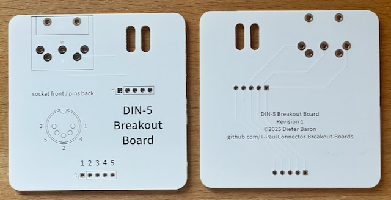

Ich habe die Platine aufgebaut und getestet.

9 Stück verfügbar.
Diese Platine führt alle Pins eines DIN-5 Steckers und einer Buchse an eine Stiftleiste.
| Komponente | Anzahl | Preis | Anbieter |
| Platine | 1 | €1.00 | |
| 1x5 Stiftleiste | 1 | €0.09 | Reichelt |
| Kabelbinder | 1 | — | |
| 90° DIN-5 Buchse | 1 | €1.51 | Reichelt |
| DIN-5 Stecker | 1 | €0.64 | Reichelt |
| 5 poliges Kabel, 1m | 0.2 | €1.00 | Conrad |
| nur Platine | €1.00 | ||
| Teilbausatz | €4.24 |